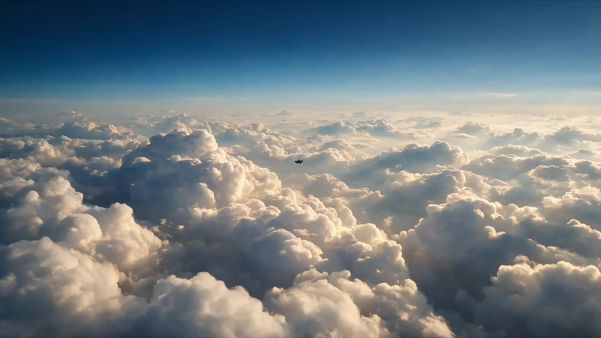

We produce commercial film, photography and design for brands that refuse to look ordinary — delivered on a monthly retainer, with design included in every tier.

Projects delivered
Brand partners
Countries served
Average client rating
Trusted by
We deliberately do not do everything. We do these four, and we take each of them to the point where the work holds up on any screen your brand appears on.
Use the arrows to move through the work. Click any piece to watch it in full.
Nothing filed under this category yet.
Art-directed frame by frame, generated with AI, retouched by hand.
One monthly agreement covering film, photography and design. No per-asset invoicing, no surprises at the end of the month. Cancel with 30 days' notice.
Pay yearly and two months are on us.
Design is never an add-on here. It ships with the film.
Prices exclude VAT and third-party costs such as talent, props and paid media. One-off projects are available on request.
Tell us what you sell and where you need it seen. You will have a concept and a quote within two working days — at no cost and with no obligation.